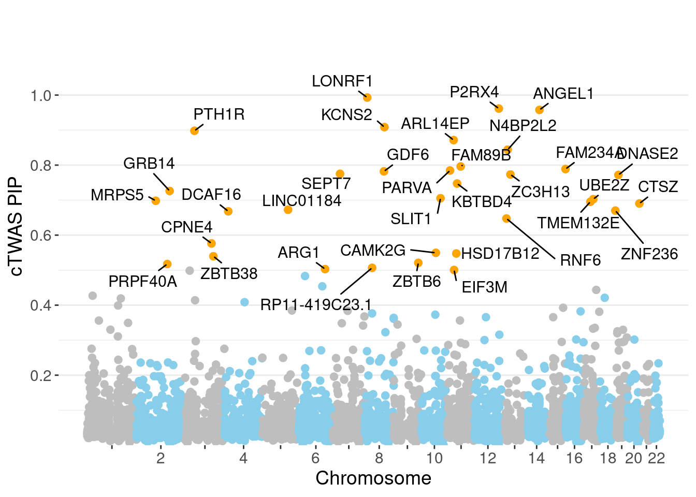

T2D - Adipose Subcutaneous
sheng Qian
2021-2-6
Last updated: 2022-02-26
Checks: 6 1
Knit directory: cTWAS_analysis/
This reproducible R Markdown analysis was created with workflowr (version 1.6.2). The Checks tab describes the reproducibility checks that were applied when the results were created. The Past versions tab lists the development history.
Great! Since the R Markdown file has been committed to the Git repository, you know the exact version of the code that produced these results.
Great job! The global environment was empty. Objects defined in the global environment can affect the analysis in your R Markdown file in unknown ways. For reproduciblity it’s best to always run the code in an empty environment.
The command set.seed(20211220) was run prior to running the code in the R Markdown file. Setting a seed ensures that any results that rely on randomness, e.g. subsampling or permutations, are reproducible.
Great job! Recording the operating system, R version, and package versions is critical for reproducibility.
Nice! There were no cached chunks for this analysis, so you can be confident that you successfully produced the results during this run.
Using absolute paths to the files within your workflowr project makes it difficult for you and others to run your code on a different machine. Change the absolute path(s) below to the suggested relative path(s) to make your code more reproducible.
| absolute | relative |
|---|---|
| /project2/xinhe/shengqian/cTWAS/cTWAS_analysis/data/ | data |
| /project2/xinhe/shengqian/cTWAS/cTWAS_analysis/code/ctwas_config.R | code/ctwas_config.R |
Great! You are using Git for version control. Tracking code development and connecting the code version to the results is critical for reproducibility.
The results in this page were generated with repository version 5c37a5d. See the Past versions tab to see a history of the changes made to the R Markdown and HTML files.
Note that you need to be careful to ensure that all relevant files for the analysis have been committed to Git prior to generating the results (you can use wflow_publish or wflow_git_commit). workflowr only checks the R Markdown file, but you know if there are other scripts or data files that it depends on. Below is the status of the Git repository when the results were generated:
Ignored files:
Ignored: .ipynb_checkpoints/
Ignored: data/AF/
Untracked files:
Untracked: Rplot.png
Untracked: analysis/.ipynb_checkpoints/
Untracked: analysis/Glucose_Adipose_Subcutaneous.Rmd
Untracked: analysis/Glucose_Adipose_Visceral_Omentum.Rmd
Untracked: analysis/Splicing_Test.Rmd
Untracked: code/.ipynb_checkpoints/
Untracked: code/AF_out/
Untracked: code/BMI_S_out/
Untracked: code/BMI_out/
Untracked: code/Glucose_out/
Untracked: code/LDL_S_out/
Untracked: code/T2D_out/
Untracked: code/ctwas_config.R
Untracked: code/mapping.R
Untracked: code/out/
Untracked: code/run_AF_analysis.sbatch
Untracked: code/run_AF_analysis.sh
Untracked: code/run_AF_ctwas_rss_LDR.R
Untracked: code/run_BMI_analysis.sbatch
Untracked: code/run_BMI_analysis.sh
Untracked: code/run_BMI_analysis_S.sbatch
Untracked: code/run_BMI_analysis_S.sh
Untracked: code/run_BMI_ctwas_rss_LDR.R
Untracked: code/run_BMI_ctwas_rss_LDR_S.R
Untracked: code/run_Glucose_analysis.sbatch
Untracked: code/run_Glucose_analysis.sh
Untracked: code/run_Glucose_ctwas_rss_LDR.R
Untracked: code/run_LDL_analysis_S.sbatch
Untracked: code/run_LDL_analysis_S.sh
Untracked: code/run_LDL_ctwas_rss_LDR_S.R
Untracked: code/run_T2D_analysis.sbatch
Untracked: code/run_T2D_analysis.sh
Untracked: code/run_T2D_ctwas_rss_LDR.R
Untracked: data/.ipynb_checkpoints/
Untracked: data/BMI/
Untracked: data/BMI_S/
Untracked: data/Glucose/
Untracked: data/LDL_S/
Untracked: data/T2D/
Untracked: data/TEST/
Untracked: data/UKBB/
Untracked: data/UKBB_SNPs_Info.text
Untracked: data/gene_OMIM.txt
Untracked: data/gene_pip_0.8.txt
Untracked: data/mashr_Heart_Atrial_Appendage.db
Untracked: data/mashr_sqtl/
Untracked: data/summary_known_genes_annotations.xlsx
Untracked: data/untitled.txt
Unstaged changes:
Modified: analysis/BMI_Brain_Amygdala_S.Rmd
Modified: analysis/BMI_Brain_Anterior_cingulate_cortex_BA24_S.Rmd
Modified: analysis/BMI_Brain_Caudate_basal_ganglia_S.Rmd
Modified: analysis/BMI_Brain_Cerebellar_Hemisphere_S.Rmd
Modified: analysis/BMI_Brain_Cerebellum_S.Rmd
Modified: analysis/BMI_Brain_Cortex.Rmd
Modified: analysis/BMI_Brain_Cortex_S.Rmd
Modified: analysis/BMI_Brain_Frontal_Cortex_BA9_S.Rmd
Modified: analysis/BMI_Brain_Hippocampus_S.Rmd
Modified: analysis/BMI_Brain_Hypothalamus_S.Rmd
Modified: analysis/BMI_Brain_Nucleus_accumbens_basal_ganglia_S.Rmd
Modified: analysis/BMI_Brain_Putamen_basal_ganglia_S.Rmd
Modified: analysis/BMI_Brain_Spinal_cord_cervical_c-1_S.Rmd
Modified: analysis/BMI_Brain_Substantia_nigra_S.Rmd
Modified: analysis/LDL_Liver_S.Rmd
Note that any generated files, e.g. HTML, png, CSS, etc., are not included in this status report because it is ok for generated content to have uncommitted changes.
These are the previous versions of the repository in which changes were made to the R Markdown (analysis/T2D_Adipose_Subcutaneous.Rmd) and HTML (docs/T2D_Adipose_Subcutaneous.html) files. If you’ve configured a remote Git repository (see ?wflow_git_remote), click on the hyperlinks in the table below to view the files as they were in that past version.
| File | Version | Author | Date | Message |
|---|---|---|---|---|
| Rmd | 5c37a5d | sq-96 | 2022-02-26 | update |
| html | 3fa3a64 | sq-96 | 2022-02-26 | Build site. |
| html | 91f38fa | sq-96 | 2022-02-13 | Build site. |
| Rmd | eb13ecf | sq-96 | 2022-02-13 | update |
| html | e6bc169 | sq-96 | 2022-02-13 | Build site. |
| Rmd | 87fee8b | sq-96 | 2022-02-13 | update |
Weight QC
#number of imputed weights
nrow(qclist_all)[1] 8591#number of imputed weights by chromosome
table(qclist_all$chr)
1 2 3 4 5 6 7 8 9 10 11 12 13 14 15 16 17 18 19 20
874 679 536 364 458 498 421 323 333 362 534 523 182 297 322 342 434 142 429 246
21 22
102 190 #number of imputed weights without missing variants
sum(qclist_all$nmiss==0)[1] 4545#proportion of imputed weights without missing variants
mean(qclist_all$nmiss==0)[1] 0.529Check convergence of parameters
#estimated group prior
estimated_group_prior <- group_prior_rec[,ncol(group_prior_rec)]
names(estimated_group_prior) <- c("gene", "snp")
estimated_group_prior["snp"] <- estimated_group_prior["snp"]*thin #adjust parameter to account for thin argument
print(estimated_group_prior) gene snp
0.0164053 0.0003491 #estimated group prior variance
estimated_group_prior_var <- group_prior_var_rec[,ncol(group_prior_var_rec)]
names(estimated_group_prior_var) <- c("gene", "snp")
print(estimated_group_prior_var) gene snp
9.542 8.857 #report sample size
print(sample_size)[1] 62892#report group size
group_size <- c(nrow(ctwas_gene_res), n_snps)
print(group_size)[1] 8591 5017200#estimated group PVE
estimated_group_pve <- estimated_group_prior_var*estimated_group_prior*group_size/sample_size #check PVE calculation
names(estimated_group_pve) <- c("gene", "snp")
print(estimated_group_pve) gene snp
0.02138 0.24667 #compare sum(PIP*mu2/sample_size) with above PVE calculation
c(sum(ctwas_gene_res$PVE),sum(ctwas_snp_res$PVE))[1] 0.09756 1.39401Genes with highest PIPs
genename region_tag susie_pip mu2 PVE z num_eqtl
7109 LONRF1 8_15 0.9929 29.21 0.0004612 -5.425 2
5112 P2RX4 12_74 0.9615 25.94 0.0003966 5.081 1
250 ANGEL1 14_36 0.9577 22.68 0.0003453 4.529 2
7272 KCNS2 8_68 0.9085 26.21 0.0003787 -5.148 1
7654 PTH1R 3_33 0.8980 30.11 0.0004300 -5.646 1
6918 ARL14EP 11_21 0.8715 23.28 0.0003226 -4.878 2
13239 N4BP2L2 13_11 0.8441 24.34 0.0003267 -4.430 1
10030 FAM89B 11_36 0.7961 24.33 0.0003080 5.011 1
8836 FAM234A 16_1 0.7888 31.19 0.0003912 5.621 1
11712 PARVA 11_9 0.7846 20.35 0.0002539 -3.862 1
7267 GDF6 8_67 0.7821 21.36 0.0002656 -4.372 1
3924 SEPT7 7_26 0.7751 20.71 0.0002553 -4.167 1
3988 ZC3H13 13_19 0.7732 20.56 0.0002527 4.310 1
2323 DNASE2 19_10 0.7718 18.79 0.0002306 -3.744 1
4009 KBTBD4 11_29 0.7474 26.46 0.0003145 -5.098 1
3282 GRB14 2_100 0.7262 21.32 0.0002461 4.745 1
11149 SLIT1 10_62 0.7054 24.45 0.0002742 4.797 2
7490 UBE2Z 17_28 0.7027 47.08 0.0005260 -7.392 1
6245 MRPS5 2_57 0.6981 19.67 0.0002184 -3.810 2
10469 TMEM132E 17_20 0.6954 21.33 0.0002358 -3.693 2Genes with largest effect sizes
genename region_tag susie_pip mu2 PVE z num_eqtl
7048 JAZF1 7_23 0.010490 138.57 2.311e-05 -12.731 1
14285 RP11-395N3.2 2_133 0.035389 109.24 6.147e-05 -11.370 1
356 ANK1 8_36 0.040526 59.39 3.827e-05 8.667 1
6954 ZFP36L2 2_27 0.039417 55.29 3.465e-05 8.377 1
2723 WFS1 4_7 0.029567 53.23 2.502e-05 10.642 1
8537 C2 6_26 0.219641 52.12 1.820e-04 7.149 1
11174 KCNJ11 11_12 0.022353 49.77 1.769e-05 7.231 1
11270 NCR3LG1 11_12 0.022725 49.31 1.782e-05 -7.169 2
14659 LINC01126 2_27 0.049134 47.85 3.738e-05 -7.520 2
1417 PABPC4 1_24 0.208389 47.85 1.585e-04 -7.054 1
7490 UBE2Z 17_28 0.702743 47.08 5.260e-04 -7.392 1
3368 THADA 2_27 0.037436 45.75 2.723e-05 7.450 1
943 ZZEF1 17_4 0.090687 43.96 6.339e-05 6.917 1
10282 ZNF664 12_75 0.315661 43.32 2.174e-04 -6.452 1
7491 SNF8 17_28 0.064662 43.17 4.438e-05 6.300 1
10726 BMP8A 1_24 0.090841 42.59 6.152e-05 6.868 1
6449 CDKAL1 6_15 0.003752 40.70 2.428e-06 -8.192 1
10555 UBE2E2 3_17 0.498581 39.49 3.131e-04 6.081 1
3647 CCDC92 12_75 0.108518 38.03 6.562e-05 -5.499 5
13467 RP11-419C23.1 8_33 0.506567 37.39 3.012e-04 -6.317 1Genes with highest PVE
genename region_tag susie_pip mu2 PVE z num_eqtl
7490 UBE2Z 17_28 0.7027 47.08 0.0005260 -7.392 1
7109 LONRF1 8_15 0.9929 29.21 0.0004612 -5.425 2
7654 PTH1R 3_33 0.8980 30.11 0.0004300 -5.646 1
5112 P2RX4 12_74 0.9615 25.94 0.0003966 5.081 1
8836 FAM234A 16_1 0.7888 31.19 0.0003912 5.621 1
7272 KCNS2 8_68 0.9085 26.21 0.0003787 -5.148 1
250 ANGEL1 14_36 0.9577 22.68 0.0003453 4.529 2
13239 N4BP2L2 13_11 0.8441 24.34 0.0003267 -4.430 1
6918 ARL14EP 11_21 0.8715 23.28 0.0003226 -4.878 2
4009 KBTBD4 11_29 0.7474 26.46 0.0003145 -5.098 1
10555 UBE2E2 3_17 0.4986 39.49 0.0003131 6.081 1
10030 FAM89B 11_36 0.7961 24.33 0.0003080 5.011 1
13467 RP11-419C23.1 8_33 0.5066 37.39 0.0003012 -6.317 1
6645 CAMK2G 10_49 0.5495 32.01 0.0002796 5.013 1
11149 SLIT1 10_62 0.7054 24.45 0.0002742 4.797 2
7267 GDF6 8_67 0.7821 21.36 0.0002656 -4.372 1
3924 SEPT7 7_26 0.7751 20.71 0.0002553 -4.167 1
11712 PARVA 11_9 0.7846 20.35 0.0002539 -3.862 1
3988 ZC3H13 13_19 0.7732 20.56 0.0002527 4.310 1
3282 GRB14 2_100 0.7262 21.32 0.0002461 4.745 1Genes with largest z scores
genename region_tag susie_pip mu2 PVE z num_eqtl
7048 JAZF1 7_23 0.010490 138.57 2.311e-05 -12.731 1
14285 RP11-395N3.2 2_133 0.035389 109.24 6.147e-05 -11.370 1
2723 WFS1 4_7 0.029567 53.23 2.502e-05 10.642 1
356 ANK1 8_36 0.040526 59.39 3.827e-05 8.667 1
6954 ZFP36L2 2_27 0.039417 55.29 3.465e-05 8.377 1
6449 CDKAL1 6_15 0.003752 40.70 2.428e-06 -8.192 1
14659 LINC01126 2_27 0.049134 47.85 3.738e-05 -7.520 2
3368 THADA 2_27 0.037436 45.75 2.723e-05 7.450 1
7490 UBE2Z 17_28 0.702743 47.08 5.260e-04 -7.392 1
11174 KCNJ11 11_12 0.022353 49.77 1.769e-05 7.231 1
11270 NCR3LG1 11_12 0.022725 49.31 1.782e-05 -7.169 2
8537 C2 6_26 0.219641 52.12 1.820e-04 7.149 1
1417 PABPC4 1_24 0.208389 47.85 1.585e-04 -7.054 1
943 ZZEF1 17_4 0.090687 43.96 6.339e-05 6.917 1
10726 BMP8A 1_24 0.090841 42.59 6.152e-05 6.868 1
10282 ZNF664 12_75 0.315661 43.32 2.174e-04 -6.452 1
12119 MICB 6_25 0.483138 29.84 2.292e-04 6.443 3
13467 RP11-419C23.1 8_33 0.506567 37.39 3.012e-04 -6.317 1
7491 SNF8 17_28 0.064662 43.17 4.438e-05 6.300 1
7368 AP3S2 15_41 0.392664 36.08 2.252e-04 6.273 2Comparing z scores and PIPs

[1] 0.009079 genename region_tag susie_pip mu2 PVE z num_eqtl
7048 JAZF1 7_23 0.010490 138.57 2.311e-05 -12.731 1
14285 RP11-395N3.2 2_133 0.035389 109.24 6.147e-05 -11.370 1
2723 WFS1 4_7 0.029567 53.23 2.502e-05 10.642 1
356 ANK1 8_36 0.040526 59.39 3.827e-05 8.667 1
6954 ZFP36L2 2_27 0.039417 55.29 3.465e-05 8.377 1
6449 CDKAL1 6_15 0.003752 40.70 2.428e-06 -8.192 1
14659 LINC01126 2_27 0.049134 47.85 3.738e-05 -7.520 2
3368 THADA 2_27 0.037436 45.75 2.723e-05 7.450 1
7490 UBE2Z 17_28 0.702743 47.08 5.260e-04 -7.392 1
11174 KCNJ11 11_12 0.022353 49.77 1.769e-05 7.231 1
11270 NCR3LG1 11_12 0.022725 49.31 1.782e-05 -7.169 2
8537 C2 6_26 0.219641 52.12 1.820e-04 7.149 1
1417 PABPC4 1_24 0.208389 47.85 1.585e-04 -7.054 1
943 ZZEF1 17_4 0.090687 43.96 6.339e-05 6.917 1
10726 BMP8A 1_24 0.090841 42.59 6.152e-05 6.868 1
10282 ZNF664 12_75 0.315661 43.32 2.174e-04 -6.452 1
12119 MICB 6_25 0.483138 29.84 2.292e-04 6.443 3
13467 RP11-419C23.1 8_33 0.506567 37.39 3.012e-04 -6.317 1
7491 SNF8 17_28 0.064662 43.17 4.438e-05 6.300 1
7368 AP3S2 15_41 0.392664 36.08 2.252e-04 6.273 2GO enrichment analysis for genes with PIP>0.5
#number of genes for gene set enrichment
length(genes)[1] 34Uploading data to Enrichr... Done.
Querying GO_Biological_Process_2021... Done.
Querying GO_Cellular_Component_2021... Done.
Querying GO_Molecular_Function_2021... Done.
Parsing results... Done.
[1] "GO_Biological_Process_2021"[1] Term Overlap Adjusted.P.value Genes
<0 rows> (or 0-length row.names)
[1] "GO_Cellular_Component_2021"[1] Term Overlap Adjusted.P.value Genes
<0 rows> (or 0-length row.names)
[1] "GO_Molecular_Function_2021"[1] Term Overlap Adjusted.P.value Genes
<0 rows> (or 0-length row.names)DisGeNET enrichment analysis for genes with PIP>0.5
Description FDR Ratio BgRatio
47 Jansen type metaphyseal chondrodysplasia 0.02097 1/16 1/9703
69 Eiken Skeletal Dysplasia 0.02097 1/16 1/9703
71 Failure of Tooth Eruption, Primary 0.02097 1/16 1/9703
72 Chondrodysplasia, blomstrand type 0.02097 1/16 1/9703
76 MICROPHTHALMIA, ISOLATED 4 (disorder) 0.02097 1/16 1/9703
83 LEBER CONGENITAL AMAUROSIS 17 0.02097 1/16 1/9703
89 MULTIPLE SYNOSTOSES SYNDROME 4 0.02097 1/16 1/9703
48 Hyperargininemia 0.02933 1/16 2/9703
73 KLIPPEL-FEIL SYNDROME, AUTOSOMAL DOMINANT 0.02933 1/16 2/9703
79 MICROPHTHALMIA, ISOLATED, WITH COLOBOMA 6 0.02933 1/16 2/9703WebGestalt enrichment analysis for genes with PIP>0.5
Loading the functional categories...
Loading the ID list...
Loading the reference list...
Performing the enrichment analysis...Warning in oraEnrichment(interestGeneList, referenceGeneList, geneSet, minNum =
minNum, : No significant gene set is identified based on FDR 0.05!NULLPIP Manhattan Plot

Sensitivity, specificity and precision for silver standard genes
#number of genes in known annotations
print(length(known_annotations))[1] 72#number of genes in known annotations with imputed expression
print(sum(known_annotations %in% ctwas_gene_res$genename))[1] 25#significance threshold for TWAS
print(sig_thresh)[1] 4.533#number of ctwas genes
length(ctwas_genes)[1] 34#number of TWAS genes
length(twas_genes)[1] 78#show novel genes (ctwas genes with not in TWAS genes)
ctwas_gene_res[ctwas_gene_res$genename %in% novel_genes,report_cols] genename region_tag susie_pip mu2 PVE z num_eqtl
6245 MRPS5 2_57 0.6981 19.67 0.0002184 -3.810 2
11514 PRPF40A 2_91 0.5173 20.30 0.0001670 -3.928 1
11477 CPNE4 3_81 0.5763 21.37 0.0001958 4.312 1
10066 ZBTB38 3_86 0.5397 17.85 0.0001532 -3.085 1
7947 DCAF16 4_17 0.6680 21.59 0.0002293 -4.110 2
13258 LINC01184 5_78 0.6725 19.24 0.0002058 3.793 1
3924 SEPT7 7_26 0.7751 20.71 0.0002553 -4.167 1
11034 ZBTB6 9_63 0.5209 21.63 0.0001792 4.264 1
11712 PARVA 11_9 0.7846 20.35 0.0002539 -3.862 1
6672 EIF3M 11_22 0.5005 18.64 0.0001483 -3.890 1
3988 ZC3H13 13_19 0.7732 20.56 0.0002527 4.310 1
10469 TMEM132E 17_20 0.6954 21.33 0.0002358 -3.693 2
4665 ZNF236 18_45 0.6700 20.05 0.0002136 -4.227 2
2323 DNASE2 19_10 0.7718 18.79 0.0002306 -3.744 1
1860 CTSZ 20_34 0.6903 19.10 0.0002097 -3.496 2
7267 GDF6 8_67 0.7821 21.36 0.0002656 -4.372 1
4388 RNF6 13_6 0.6475 23.06 0.0002374 -4.341 1
13239 N4BP2L2 13_11 0.8441 24.34 0.0003267 -4.430 1
250 ANGEL1 14_36 0.9577 22.68 0.0003453 4.529 2#sensitivity / recall
print(sensitivity) ctwas TWAS
0.00000 0.02778 #specificity
print(specificity) ctwas TWAS
0.9960 0.9911 #precision / PPV
print(precision) ctwas TWAS
0.00000 0.02564
sessionInfo()R version 3.6.1 (2019-07-05)
Platform: x86_64-pc-linux-gnu (64-bit)
Running under: Scientific Linux 7.4 (Nitrogen)
Matrix products: default
BLAS/LAPACK: /software/openblas-0.2.19-el7-x86_64/lib/libopenblas_haswellp-r0.2.19.so
locale:
[1] LC_CTYPE=en_US.UTF-8 LC_NUMERIC=C
[3] LC_TIME=en_US.UTF-8 LC_COLLATE=en_US.UTF-8
[5] LC_MONETARY=en_US.UTF-8 LC_MESSAGES=en_US.UTF-8
[7] LC_PAPER=en_US.UTF-8 LC_NAME=C
[9] LC_ADDRESS=C LC_TELEPHONE=C
[11] LC_MEASUREMENT=en_US.UTF-8 LC_IDENTIFICATION=C
attached base packages:
[1] stats graphics grDevices utils datasets methods base
other attached packages:
[1] readxl_1.3.1 forcats_0.5.1 stringr_1.4.0 dplyr_1.0.7
[5] purrr_0.3.4 readr_2.1.1 tidyr_1.1.4 tidyverse_1.3.1
[9] tibble_3.1.6 WebGestaltR_0.4.4 disgenet2r_0.99.2 enrichR_3.0
[13] cowplot_1.0.0 ggplot2_3.3.5 workflowr_1.6.2
loaded via a namespace (and not attached):
[1] fs_1.5.2 lubridate_1.8.0 bit64_4.0.5 doParallel_1.0.17
[5] httr_1.4.2 rprojroot_2.0.2 tools_3.6.1 backports_1.4.1
[9] doRNG_1.8.2 utf8_1.2.2 R6_2.5.1 vipor_0.4.5
[13] DBI_1.1.2 colorspace_2.0-2 withr_2.4.3 ggrastr_1.0.1
[17] tidyselect_1.1.1 bit_4.0.4 curl_4.3.2 compiler_3.6.1
[21] git2r_0.26.1 rvest_1.0.2 cli_3.1.0 Cairo_1.5-12.2
[25] xml2_1.3.3 labeling_0.4.2 scales_1.1.1 apcluster_1.4.8
[29] digest_0.6.29 rmarkdown_2.11 svglite_1.2.2 pkgconfig_2.0.3
[33] htmltools_0.5.2 dbplyr_2.1.1 fastmap_1.1.0 highr_0.9
[37] rlang_1.0.1 rstudioapi_0.13 RSQLite_2.2.8 jquerylib_0.1.4
[41] farver_2.1.0 generics_0.1.1 jsonlite_1.7.2 vroom_1.5.7
[45] magrittr_2.0.2 Matrix_1.2-18 ggbeeswarm_0.6.0 Rcpp_1.0.8
[49] munsell_0.5.0 fansi_1.0.2 gdtools_0.1.9 lifecycle_1.0.1
[53] stringi_1.7.6 whisker_0.3-2 yaml_2.2.1 plyr_1.8.6
[57] grid_3.6.1 blob_1.2.2 ggrepel_0.9.1 parallel_3.6.1
[61] promises_1.0.1 crayon_1.5.0 lattice_0.20-38 haven_2.4.3
[65] hms_1.1.1 knitr_1.36 pillar_1.6.4 igraph_1.2.10
[69] rjson_0.2.20 rngtools_1.5.2 reshape2_1.4.4 codetools_0.2-16
[73] reprex_2.0.1 glue_1.6.2 evaluate_0.14 data.table_1.14.2
[77] modelr_0.1.8 vctrs_0.3.8 tzdb_0.2.0 httpuv_1.5.1
[81] foreach_1.5.2 cellranger_1.1.0 gtable_0.3.0 assertthat_0.2.1
[85] cachem_1.0.6 xfun_0.29 broom_0.7.10 later_0.8.0
[89] iterators_1.0.14 beeswarm_0.2.3 memoise_2.0.1 ellipsis_0.3.2